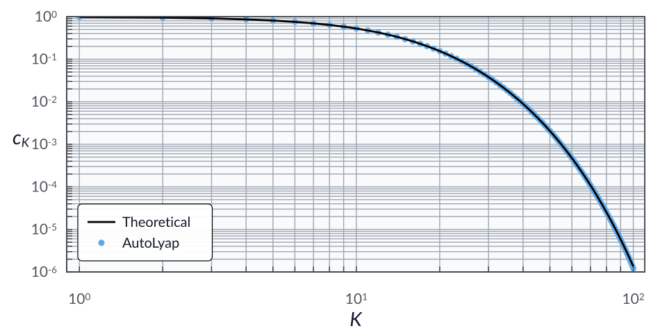

The information-theoretic exact method
Problem setup
Consider the unconstrained minimization problem
where \(f : \calH \to \reals\) is \(\mu\)-strongly convex and \(L\)-smooth with \(0 < \mu < L\).
For initial points \(x^0, z^0 \in \calH\), set \(q=\mu/L\), \(y^{-1}=x^0=z^0\), and \(\tilde{A}_0=0\). For each \(k \in \naturals\), define
The information-theoretic exact method (ITEM) [TD23] is
In this example, we search for the smallest AutoLyap certificate constant \(c_K\) such that
where \(x^\star \in \Argmin_{x \in \calH} f(x)\).
Model the problem in AutoLyap and search for the smallest c_K
\(f\) is modeled by
SmoothStronglyConvex.The optimization problem is represented by
InclusionProblem.The update rule is represented by
ITEM.Initial and final distance-to-solution parameters \(\|z^k-x^\star\|^2\) are obtained with
IterationDependent.get_parameters_state_component_distance_to_solutionusingell=2(ITEM state is \((x^k,z^k)\)).The certificate constant is computed with
IterationDependent.search_lyapunov.
Run the iteration-dependent analysis
This example uses the MOSEK Fusion backend (backend="mosek_fusion").
Install the optional MOSEK dependency first:
pip install "autolyap[mosek]"
from autolyap import IterationDependent, SolverOptions
from autolyap.algorithms import ITEM
from autolyap.problemclass import InclusionProblem, SmoothStronglyConvex
mu = 1.0
L = 200.0
K = 10
q = mu / L
problem = InclusionProblem([SmoothStronglyConvex(mu=mu, L=L)])
algorithm = ITEM(mu=mu, L=L)
solver_options = SolverOptions(backend="mosek_fusion")
# License-free option:
# solver_options = SolverOptions(backend="cvxpy", cvxpy_solver="CLARABEL")
Q_0, q_0 = IterationDependent.get_parameters_state_component_distance_to_solution(
algorithm,
k=0,
ell=2,
)
Q_K, q_K = IterationDependent.get_parameters_state_component_distance_to_solution(
algorithm,
k=K,
ell=2,
)
result = IterationDependent.search_lyapunov(
problem,
algorithm,
K,
Q_0,
Q_K,
q_0=q_0,
q_K=q_K,
solver_options=solver_options,
)
if result["status"] != "feasible":
raise RuntimeError("No feasible chained Lyapunov certificate for ITEM.")
c_K_autolyap = result["c_K"]
A_tilde_K = algorithm.get_A(K)
c_K_theory = 1.0 / (1.0 + q * A_tilde_K)
print(f"ITEM c_K (AutoLyap): {c_K_autolyap:.6e}")
print(f"ITEM c_K (theory): {c_K_theory:.6e}")
The computed value ITEM c_K (AutoLyap) matches (up to solver numerical
tolerances) the theoretical horizon-K expression from
[TD23, Theorem 3]:
Sweeping over \(K \in \llbracket 1, 100\rrbracket\) gives the log-log plot below, with the theoretical bound in black and AutoLyap certificates as blue dots.
{kind=link}

References
Adrien Taylor and Yoel Drori. An optimal gradient method for smooth strongly convex minimization. Mathematical Programming, 199(1-2):557–594, 2023. doi:10.1007/s10107-022-01839-y.